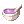
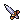
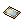
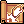
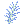
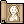

File list
This special page shows all uploaded files.
{kind=link}
{kind=link}
| Date | Name | Thumbnail | Size | User | Description | Versions |
|---|---|---|---|---|---|---|
| 16:10, 30 September 2016 | Fortunity - Pirate Dagger.png (file) |  |
284 bytes | Akenoyuki | 1 | |
| 23:24, 24 November 2015 | WhiteDyestuffs.gif (file) | 284 bytes | Lai | 1 | ||
| 06:50, 1 October 2016 | 2348.gif (file) |  |
287 bytes | Cyphers | 1 | |
| 23:16, 24 November 2015 | BlackDyestuffs.gif (file) | 288 bytes | Lai | 1 | ||
| 22:44, 18 December 2015 | MGold.png (file) | 289 bytes | Adri | 1 | ||
| 23:21, 24 November 2015 | OrangeDyestuffs.gif (file) | 289 bytes | Lai | 1 | ||
| 17:23, 16 July 2018 | Chip01.png (file) | 294 bytes | Colours | 1 | ||
| 17:23, 16 July 2018 | Chip02.png (file) | 294 bytes | Colours | 1 | ||
| 11:23, 7 October 2016 | Lightning Bolt.png (file) |  |
294 bytes | Seandh | 1 | |
| 23:24, 24 November 2015 | VioletDyestuffs.gif (file) |  | 294 bytes | Lai | 1 | |
| 23:46, 16 September 2015 | Scell.png (file) |  |
295 bytes | AloeLeaflet | 1 | |
| 02:19, 18 September 2015 | Skelb.png (file) | 295 bytes | AloeLeaflet | 1 | ||
| 19:51, 14 April 2016 | 2286.png (file) | 297 bytes | Mayo | 1 | ||
| 11:18, 25 February 2019 | 1085.gif (file) |  |
298 bytes | Alice | 1 | |
| 19:49, 14 April 2016 | 18874.png (file) |  |
298 bytes | Mayo | 1 | |
| 11:23, 7 October 2016 | Cold Bolt.png (file) |  |
298 bytes | Seandh | 1 | |
| 15:01, 1 October 2016 | Monocle.png (file) |  |
298 bytes | Appleproject | 1 | |
| 02:00, 18 September 2015 | Cookingskewer.png (file) | 301 bytes | AloeLeaflet | 1 | ||
| 06:24, 9 April 2016 | Blue Potion.gif (file) | 302 bytes | Ihsan | 1 | ||
| 06:24, 9 April 2016 | White Potion.gif (file) |  |
303 bytes | Ihsan | 1 | |
| 23:17, 24 November 2015 | BlueBeanie.gif (file) | 305 bytes | Lai | 1 | ||
| 23:22, 24 November 2015 | PinkBeanie.gif (file) | 305 bytes | Lai | 1 | ||
| 23:18, 24 November 2015 | BrownBeanie.gif (file) | 306 bytes | Lai | 1 | ||
| 11:23, 7 October 2016 | Fire Bolt.png (file) |  |
306 bytes | Seandh | 2 | |
| 03:52, 6 April 2016 | 13094 ES Stabber Dagger.png (file) |  | 307 bytes | Renata | 1 | |
| 20:31, 4 February 2017 | Power Cord.png (file) | 308 bytes | Wolvero12 | 1 | ||
| 16:28, 17 November 2015 | RG SPRM.png (file) | 308 bytes | Halves | Icon for RG Guide. | 1 | |
| 09:48, 9 September 2016 | Cardicon.png (file) |  | 310 bytes | Appleproject | 1 | |
| 11:23, 7 October 2016 | Frost Diver.png (file) |  |
312 bytes | Seandh | 1 | |
| 00:10, 22 September 2015 | Bframeglass.png (file) | 313 bytes | AloeLeaflet | 1 | ||
| 19:20, 30 September 2016 | Improve Concentration.png (file) | 313 bytes | Inberun | 2 | ||
| 13:40, 5 October 2016 | Fire Wall.png (file) |  |
314 bytes | Seandh | 1 | |
| 02:01, 18 September 2015 | Icecrystal.png (file) | 316 bytes | AloeLeaflet | 1 | ||
| 16:30, 17 November 2015 | RG DEVO.png (file) |  |
317 bytes | Halves | Icon for RG Guide. | 1 |
| 19:14, 14 April 2016 | 2016.png (file) | 318 bytes | Mayo | 1 | ||
| 17:38, 30 September 2016 | Fortunity - Sound Amplifier.png (file) |  |
318 bytes | Akenoyuki | 1 | |
| 01:28, 10 September 2015 | Alcohol.png (file) | 319 bytes | AloeLeaflet | 1 | ||
| 23:46, 16 September 2015 | Garlet.png (file) | 319 bytes | AloeLeaflet | 1 | ||
| 14:32, 1 October 2016 | Heavenandhell.gif (file) |  |
319 bytes | Appleproject | 1 | |
| 14:55, 5 October 2016 | Fire Ball.png (file) |  | 320 bytes | LethalConcept | 1 | |
| 08:30, 1 June 2017 | Ice Crystal.png (file) |  | 320 bytes | Jack | 1 | |
| 16:13, 22 November 2015 | Bloodthirst.png (file) |  |
321 bytes | Adri | 1 | |
| 08:30, 1 June 2017 | Drosera Tentacle.png (file) | 323 bytes | Jack | 1 | ||
| 06:15, 13 September 2017 | Pticon 1swordman.png (file) |  |
323 bytes | Renata | 1 | |
| 13:54, 3 October 2016 | Rollingthunder.png (file) |  |
323 bytes | Appleproject | 1 | |
| 14:56, 5 October 2016 | Stone Curse.png (file) |  | 325 bytes | LethalConcept | 1 | |
| 09:25, 9 November 2016 | Snap.png (file) | 326 bytes | Sanoshi | 1 | ||
| 00:59, 18 September 2015 | Emptytesttube.png (file) | 327 bytes | AloeLeaflet | 1 | ||
| 08:27, 1 June 2017 | Enriched Oridecon.png (file) |  |
327 bytes | Jack | 1 | |
| 23:20, 24 November 2015 | MageHat.gif (file) | 327 bytes | Lai | 1 |
{kind=link}
{kind=link}
{kind=link}
{kind=link}
{kind=link}
{kind=link}
{kind=link}
{kind=link}
{kind=link}
{kind=link}
{kind=link}
{kind=link}
{kind=link}
{kind=link}
{kind=link}